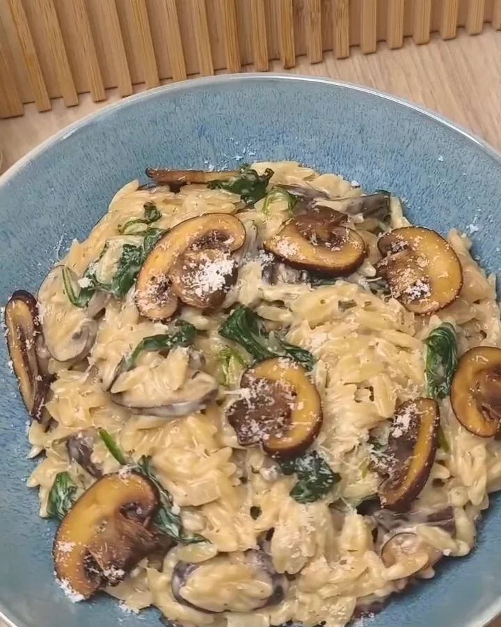

Cremige One-Pot-Orzo-Pfanne mit Champignons & Spinat
Manchmal braucht es nicht viel für ein richtig gutes Wohlfühlessen: eine Pfanne, wenige Zutaten und jede Menge Geschmack. Diese cremige Orzo-Pfanne mit Champignons, frischem Spinat und Kräuterfrischkäse ist in kurzer Zeit zubereitet und sorgt garantiert für Begeisterung am Esstisch.
- 3 Portionen
- 11 Zutaten
- 7 Schritte
Zur Zubereitung Video ansehen ↗
Zutaten
Zubereitung
- Zwiebel und Knoblauch fein hacken, Champignons in Scheiben schneiden.
- Die Champignons ohne zusätzliches Fett anbraten, bis ihre Flüssigkeit verdampft ist.
- Butter hinzufügen, Zwiebeln glasig dünsten und den Knoblauch kurz mitrösten.
- Orzo einstreuen, kurz anschwitzen und mit Gemüsebrühe aufgießen.
- Alles etwa 10 Minuten bei geschlossenem Deckel köcheln lassen. Zwischendurch umrühren.
- Kräuterfrischkäse einrühren und den Spinat unterheben, bis er zusammenfällt.
- Parmesan, Paprikapulver, Salz und Pfeffer hinzufügen, abschmecken und sofort genießen.